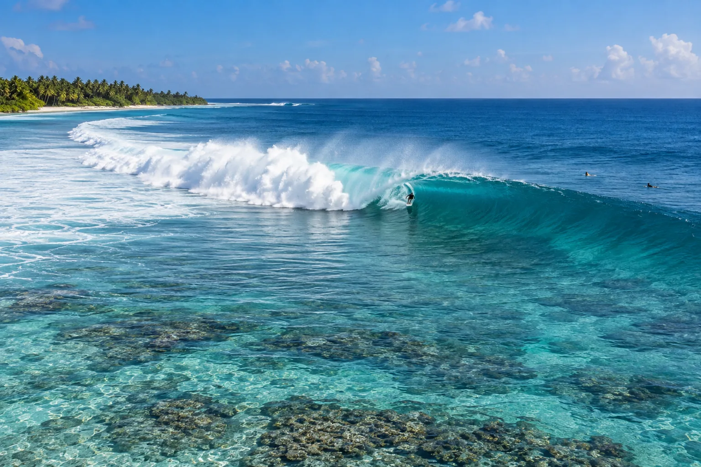

Cokes
Thulusdhoo, Maldives · surf

Droite tubulaire puissante sur récif, près d’une île locale. L’une des vagues les plus sérieuses des Maldives.
- Lieu
- Thulusdhoo, Maldives
- Niveau
- Expert
- Activités
- surf
- Type d'eau
- Mer / océan
- Coordonnées
- 4.37, 73.65 (position approximative du secteur)
Dangers à connaître
- Récif peu profond.
- Tube puissant.
Le conseil d'Ocean Buddy
Surfe à marée moyenne ou haute : à marée basse, le récif affleure.
Ouvrir dans Ocean Buddy Télécharger sur l'App Store
Source : Fiche Ocean Buddy · septembre 2026 · à vérifier localement.